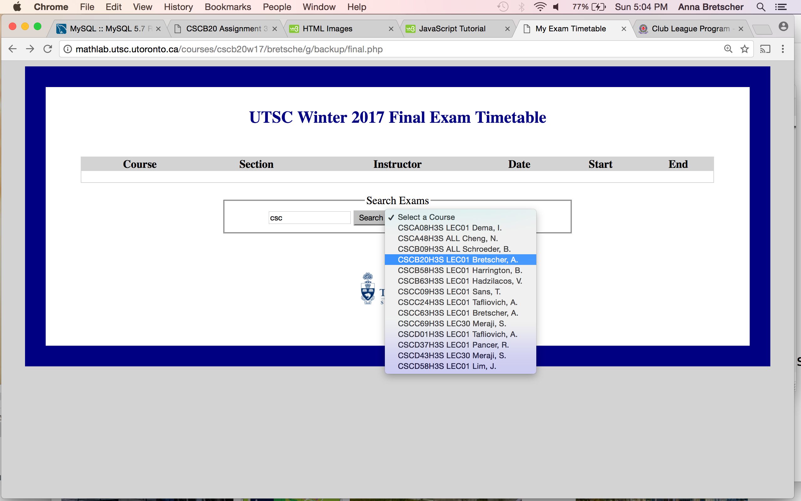

Your task for this assignment is to write the HTML, CSS, JavaScript and PHP code for a Web app that accesses a final exam timetable database site. Your app will show the exam time for a user-chosen course and alternatively (for a higher mark), an extension to this web app.

File starter.php, an incomplete starter version of your app's initial page courses.php, is provided to help get you started.
Both the front page courses.php and the
search page search.php have a form
into which the user can type a partial (or complete) course number (for example CSC or
matha. When the "search" button is clicked, an HTML select
input will be populated with all matching course names, sections and instructors
in the DB (rightmost image). When the user selects one of these options, search.php is invoked to find
the exam date, start and end times and location. The result returned
by search.php is displayed in the browser window
(bottom screenshot above).
As the last assignment for the course, one of its themes is to tie together much of the material you have learned. You will write some HTML and CSS, and a larger amount of JavaScript, PHP, and SQL code.
The required styling of these pages are very basic as shown in the images above. You are welcome to add more style to personalize and make the page look better. It is recommended you get all the functionality working first and then stylize.
courses.php, the entry page (starter code provided)search.php, the search results pageexams.php, Web service to match course namestop.html, any HTML common to the top of both courses.php and search.php pagesbottom.html, any HTML common to the bottom of both courses.php and search.php pagesexams.css, CSS styles for both courses.php and search.php pagesmyexams.js, JavaScript code for both courses.php and search.php pagescourses.php and search.php pages): In order to earn a maximum of 80% your courses.php and
search.php must both
match the appearance criteria enumerated below.
Beyond these constraints,
any other aspects of the page are up to you.
Please link to any images on your page using
absolute paths, not relative paths, since relative
paths will likely break when the marker loads
your code.
search.php this area contains
the exams time table results as described above.Beyond these constraints (and any other appearance constraints listed in the sections below), all other aspects of the page are left to you to design, so feel free to be creative! Any images should be uploaded to your mathlab Web area. All images should be linked using absolute URLs, not relative URLs.
NOTE: With so much in common between the two pages,
it is important to find ways to avoid redundancy.
You should use the PHP include
function with shared common files top.html
and bottom.html included by both pages,
to finstructor out all redundant HTML code,
as well as any PHP functions that you call in
both PHP files.
courses.php and common search form:
The initial page, courses.php, contains
the common search
form (which appears on both pages) that allows the
user to search for a course. The form must contain at least one text box and a
drop down select menu to choose from a list of matching courses.
The end goal is to submit
this form to
search.php,
to show exam results for the course. However,
before this form is submitted you will need to
convert the (possibly partial) course name the
user entered into a unique known course. It is
possible that the name the user types (such as
"CSC") will match many courses even multiple sections of the same course
or that the name will match no one at all in the
database. As such we will need a way of figuring
out which unique course in the database (if any)
the user is referring to.
To address this problem, when the user clicks
the "search" button on the
the form in courses.php JavaScript
on your page will forward the
user-entered (partial)
course name, to a Web service
called exams.php.
The exams.php Web
service will give you search results
for whatever (partial or complete) course name the user enters. The full behavior of
this Web service is described in the next section,
but it returns a JSON-format array
containing the course name, section, instructor and unique
id of all matching course(s) in the database.
This means when the user clicks the "search" button,
you will intercept the form submission in order
to contact the exams.php Web service
(using an Ajax request) to obtain a list of
courses(s) (if any) that matches the
course name entered. When you have received
JSON information back from exams.php,
you will display this as an HTML select menu (rightmost image above).
Once the user chooses an entry from this select
menu, you then invoke search.php with the unambiguous (hidden) course
id corresponding to the course chosen by the user.
The information flow for searches is roughly the following:
courses.php: User types a course name (or substrings of) into the form and clicks the "search" button.myexams.js: JavaScript code intercepts the click event, and initiates an Ajax request to look up the course id, course name, section and instructor
for the entered name.exams.php: Looks up the courses(s) that match the possibly incomplete passed name and outputs the course id, course name, section and instructor as a JSON array. myexams.js: Renders the JSON result as an HTML select menu, captures the user-choice from the select menu, and invokes search.php, now including the course id.search.php: Shows the exmas timetable results for the course of the provided ID, including everything listed in the sample image at the top of this page.Note that you should still use the form itself to convey the additional information to search.php, rather than using JavaScript to compose a query string, and then navigating to a new URL.
Pausing/resuming the form submission: If your "search" button is a "submit" button inside a form tag, any click on it will attempt to immediately submit the form. You don't want this to happen right away, since your JavaScript code needs to do an intermediate Ajax request to look up the course's id (and name etc) before the form can actually be submitted.
To 'pause' the form submission, you can have jQuery
listen for the form's 'submit' event and define
your own handler function for it. Later when
the user has selected a specific course from the select menu,
you can trigger a form submit by calling
.submit()
on the jQuery object representing the form tag.
If your exams.php Web service
is unable to find any courses matching the provided
search terms, your jQuery code should inject an error
message into the page indicating this to the user,
and abort submission of the form altogether.
exams.php:| Parameter name | Value |
|---|---|
course |
course name (or partial name) as a string, such as "csc" |
https://mathlab.utsc.utoronto.ca/courses/cscb20w17/your_utorid/exams.php?course=cscThis query would return the following JSON output, containing the instructor ID and full name of the matching instructor:
[{"course":"CSCA08H3S","section":"LEC01","instructor":"Dema, I.","id":"104"},
{"course":"CSCA48H3S","section":"ALL","instructor":"Cheng, N.","id":"105"},
{"course":"CSCB09H3S","section":"ALL","instructor":"Schroeder, B.","id":"106"},
{"course":"CSCB20H3S","section":"LEC01","instructor":"Bretscher, A.","id":"107"},
{"course":"CSCB58H3S","section":"LEC01","instructor":"Harrington, B.","id":"108"},
{"course":"CSCB63H3S","section":"LEC01","instructor":"Hadzilacos, V.","id":"109"},
{"course":"CSCC09H3S","section":"LEC01","instructor":"Sans, T.","id":"110"},
{"course":"CSCC24H3S","section":"LEC01","instructor":"Tafliovich, A.","id":"111"},
{"course":"CSCC63H3S","section":"LEC01","instructor":"Bretscher, A.","id":"112"},
{"course":"CSCC69H3S","section":"LEC30","instructor":"Meraji, S.","id":"113"},
{"course":"CSCD01H3S","section":"LEC01","instructor":"Tafliovich, A.","id":"114"},
{"course":"CSCD37H3S","section":"LEC01","instructor":"Pancer, R.","id":"115"},
{"course":"CSCD43H3S","section":"LEC30","instructor":"Meraji, S.","id":"116"},
{"course":"CSCD58H3S","section":"LEC01","instructor":"Lim, J.","id":"117"}]
jQuery's $.getJSON()
is well suited to this kind of task, fetching JSON with
Ajax and injecting it into some onscreen element using a callback function.
Your Web service should issue an HTTP error code of 404 Not Found if no instructor is found in the database that matches the given search terms.
search.php:
The search.php page performs a query on the exam database to
show a given instructor's courses. You will need to download the following dump file:
exams.sql and edit the
line USE utorid; to have your own utorid. You can then install the
required tables courses and time by executing the following command on mathlab or cmslab:
mysql -u utorid -p < exams.sql
search.php should perform
a query for the course using the passed course id.
| Parameter name | Value |
|---|---|
course_id |
course id |
The database has the following relevant tables.
| table | columns |
|---|---|
courses |
course, section, instructor, id |
time |
id, date, start, end, duration, room |
Once you install the database tables you can do a couple select statements to get familiar with the tables. FYI - this is the official time table for final exams for Winter 2017 at UTSC.
Query filtering in PHP is not acceptable. Your SQL queries must filter the data down to only the relevant rows and columns.Use the MySQL console to develop your queries before writing PHP SQL code.
When you're ready to move your queries to PHP,
test the results returned by the PHP functions to troubleshoot errors (the functions all return false if they fail).
If your query is not working properly or giving you the wrong results, be sure to check the exact text of the query that's being sent
to the MySQL server from your PHP code -- it may be different than you think!
Often little SQL syntax errors are introduced when you put your query into PHP, so it helps to see
precisely the text that's being sent to the database server. Hint: Save the text of your SQL query in
a variable, then print that variable inside pre tags.
To earn a maximum mark of 80% you should complete the requirements as outlined above. To earn a maximum mark of 100% on this assignment you should add to the functionality of this website. For example,
All HTML output sent by your PHP code should pass the W3C XHTML validator. Your CSS code should pass the W3C CSS validator and should avoid redundant or poorly written rules.
Your code should follow style guidelines similar to those for Assignment 2. Minimize redundant HTML/CSS/PHP/JavaScript code. Use functions and include files to break up code. Avoid global variables. Place descriptive comments at the top of each file, each function, and on complex code. Place a comment next to every SQL query that explains what the query is looking for. Use parameters and return values properly.
For full credit, you must write your JS code using unobtrusive JavaScript, so that no JavaScript code, onclick handlers, etc. are embedded into the XHTML code. Properly use the XHTML DOM to manipulate page content.
Show proper separation of content, presentation, and behavior between HTML, CSS, and JS/PHP. As much as possible, your JS code should use CSS classes and rules rather than manually setting style properties in the JS.
Format your code similarly to the examples from class. Use good variable and method names and indentation. Avoid lines of code and comments more than 100 characters wide.
Please do not place a solution to this assignment online on a publicly-accessible (non-password protected) Web site; doing so will be considered a violation of the Academic Code of Conduct.